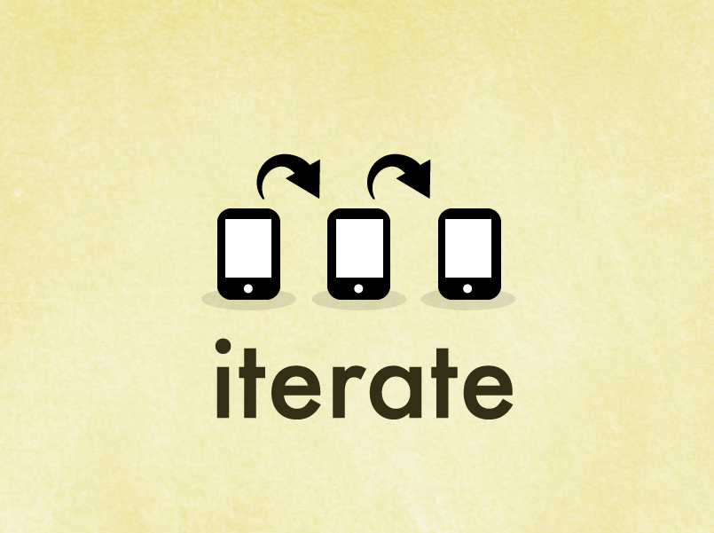

- april
- 15
- 2012
Mr. Durer, Meet the iPhone
fleetCreature apprentice, Melanie, shares her crash course in tweeting for the web. Short and sweet, she gives us the run-down of when to tweet, why, and how.
by Alyssa Reese read more >>- mar
- 25
- 2012
Twitter overlord strikes again!
fleetCreature apprentice, Melanie, shares her crash course in tweeting for the web. Short and sweet, she gives us the run-down of when to tweet, why, and how.
by Melanie Gower read more >>- feb
- 15
- 2012
Applying Wholocracy to Tech Companies Like a (Buddhist) Pro
